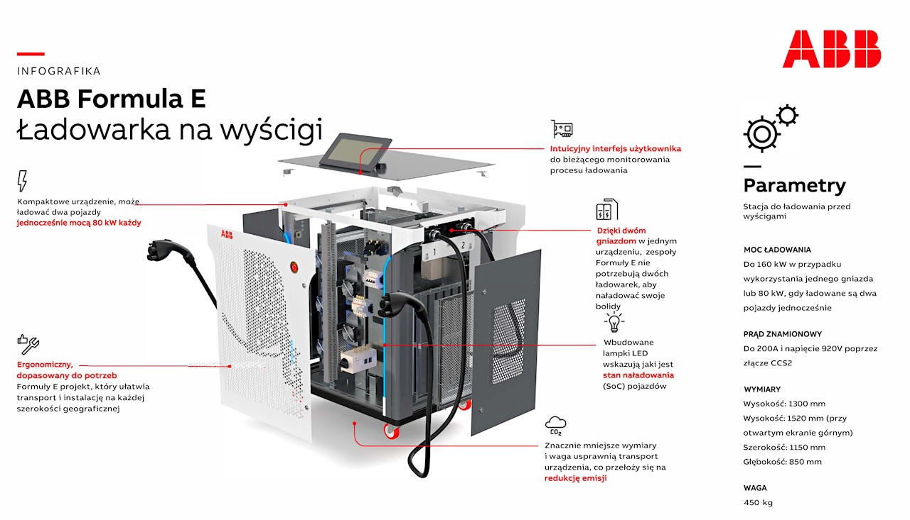
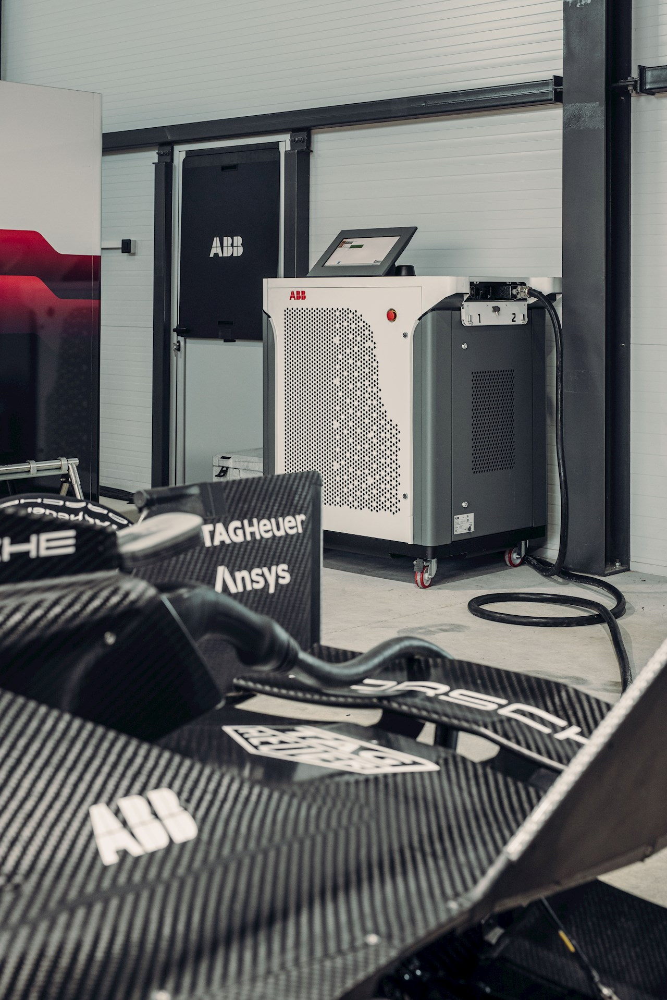

PRJ-005
ABB E-mobility
2021 — 2022
ABB Formula E — ładowarka na wyścigi
| ID projektu | PRJ-005 |
|---|---|
| Klient | ABB E-mobility |
| Okres | 2021 — 2022 |
| Rola | Senior Mechanical Engineer |
Systemy ładowania pojazdów elektrycznych (ABB E-mobility / Formula E)
Brałem udział w rozwoju systemów ładowania dla pojazdów elektrycznych, w tym infrastruktury wykorzystywanej podczas wyścigów Formula E. Odpowiadałem za projektowanie komponentów mechanicznych, wsparcie procesu wdrażania nowych produktów oraz optymalizację konstrukcji pod kątem produkcji seryjnej. Moja praca obejmowała cały cykl rozwoju produktu — od koncepcji, przez projektowanie 3D, aż po prototypowanie, testy i przygotowanie do produkcji.


Zakres odpowiedzialności obejmował:
- Projektowanie komponentów mechanicznych dla ładowarek AC Wallbox, szybkich ładowarek DC 150 kW oraz rozdzielnic zasilania (Contactor Box).
- Projektowanie szyn prądowych (busbarów) oraz prowadzenia kabli mocy z uwzględnieniem wymagań elektrycznych, montażowych i serwisowych.
- Opracowywanie elementów montażowych oraz konstrukcji wewnętrznych zapewniających łatwy montaż, wysoką niezawodność i bezpieczeństwo eksploatacji.
- Optymalizację projektów zgodnie z zasadami DFMA (Design for Manufacturing and Assembly) w celu uproszczenia produkcji, montażu oraz redukcji kosztów.
- Udział w procesie NPI (New Product Introduction), obejmującym przygotowanie nowych produktów do wdrożenia produkcyjnego oraz współpracę z działem produkcji i dostawcami.
- Współpracę z zespołami mechaniki, elektroniki oraz produkcji przy rozwiązywaniu problemów konstrukcyjnych i wdrażaniu zmian projektowych.
- Tworzenie i wdrażanie zmian konstrukcyjnych oraz przygotowywanie dokumentacji technicznej wspierającej produkcję.
- Planowanie procesu wdrażania zmian w zespole mechanicznym oraz usprawnienie organizacji pracy projektowej, umożliwiające równoległą współpracę kilku konstruktorów nad jednym modelem CAD i terminowe przygotowanie produktu do produkcji.
- Udział w montażu i testowaniu prototypów oraz walidacji projektowanych rozwiązań przed rozpoczęciem produkcji seryjnej.